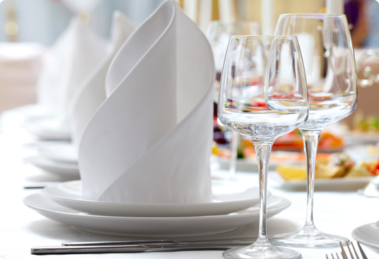

Amongst the many things that happen in (insert location here) The Restaurant
Extraordinaire is famous, for so many reason. From our beautiful lounge, to the food
that is served every day it's no wonder we are often in the media. We have many
famous superstars showing up to get a taste of the most famous restaurant in the world.
Below is the links to all media we have recieved.